Проблеми перекладання з російської
Якість
На жаль, не зважаючи на те, що ми давно робимо свої переклади, які не чим не гірше і часто навіть краще за російські (пошукайте в Youtube приклади порівнянь російського та українського озвучення в фільмах), в наших людях досі сидить ота стара добра меншовартісність, ніби треба рівнятись на росіян, бо у них апріорі якість. Що далеко не завжди відповідає правді. Ті, хто навіть не довіряв самим росіянам, довіряли (чомусь) розробникам, бо офіційний же переклад має проходити перевірки якості...

Тільки питання, а хто і як окрім самих росіян перевірятиме їх переклад, і де гарантія того шо вони десь не наплужили і не спустили на «похер»?
Така мені попалась людина, що визвалась зі мною перекладати Mirrors Edge Catalyst. Ні, дякую, я мабуть таки сам...
А ось ще чудовий момент, коли (вже інша) людина не розуміє що взагалі не так з перекладами з російської:

На основі кацапської це краще ніж кацапською?
Що? Це як? Люди не розуміють того, що вони буквально ПРОДОВЖУЮТЬ ГРАТИ РОСІЙСЬКОЮ, ПРОСТО УКРАЇНСЬКИМИ ЛІТЕРАМИ.
До речі, ця ж сама людина не розуміла, чому погано, коли (в тому числі її) переклад ставиться поверх російської мови (накручування українцями статистики росіянам).
Що цікаво — ця ж сама людина грала в "дякулу" перед автором машинного перекладу ремейка Gothic:

Про професійність цього перекладу ви можете/могли побачити кілька прикладів на сторінці машинних перекладів
А виходить так, що людина, яка не розуміє, що не так з перекладами з російської, дякує неякісному ШІ-слопу і називає його професійним
Цікавий збирається контингент навколо ШІ...
Приклади неякісних варіантів перекладу
1) Росіяни не розібрались в значенні терміна і використали зовсім неправильний, взято з Вікі:

2) В російській версії Вікі для Mirror's Edge персонаж Меркурій (Mercury) у них підписан як... Меркурі. Це вам не Фредді Меркурі, агов.

При тому, що Вікі прямо каже про походження нікнейму:

Тобто явно від стародавнього БОГА МЕРКУРІЯ. Але ж в росіян завжди все не як у людей. В оригінальній локалізації гри 2008 року, де є цей персонаж, вони просто не використовували його повне ім'я і всюди писали Мерк (хоча буквально 1-2 рази повне ім'я зустрічалось.)
3) Офіційний переклад гри Creature Kitchen
Маємо типові налаштування:

У росіян Miscellaneous (по суті, щось типу «Різне» чогось перетворилось на «Музика»

4) Гра Get to work
Англійська:Wait, you’re calling it “The Compound Interest”?
Українська (норм): Зачекай, ти сказав Складний відсоток?
Російська (як завжди): Подожди, ты называешь его "The Compound Interest"?
5) Анг/укр переклади DoW vs оф. російський
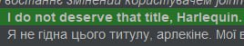
Але русня проігнорувала Арлекіно...
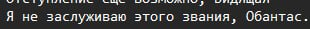
Який ще Обантас? Обантасом був той, хто це так перекладав.
6) Офіційний переклад Witcher 3:
Абсолютно недотична херня, ніяк не пов'язана з оригіналом.
7) Офіційний переклад «A space for the Unbound»:
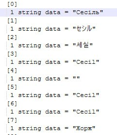
Нема часу пояснювати, просто Жорж.
7) Road Redemption
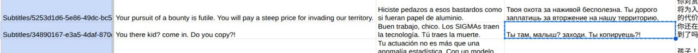
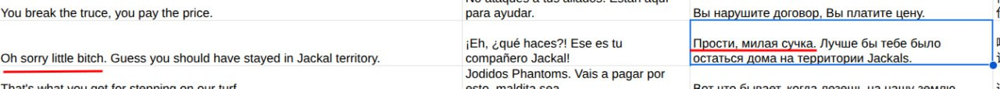
Мабуть, в Росії всі сучки милі.
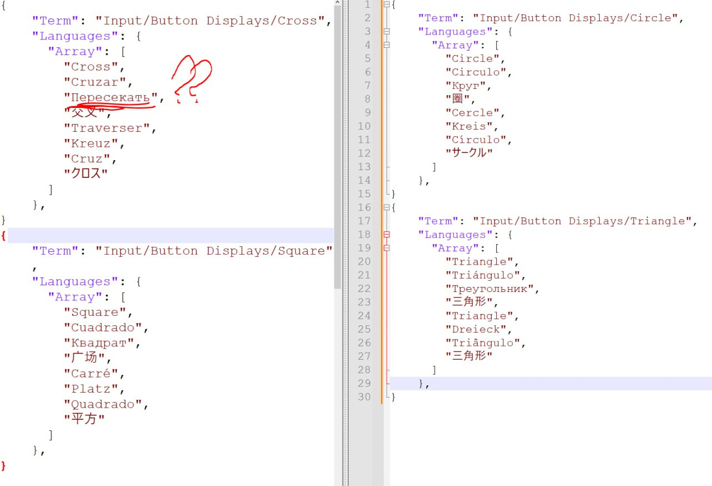
«Офіційний переклад проходить тестування та контроль якості», казали вони...
Культура/менталітет
Будь яка медіа/культурна діяльність — відображення того, хто цю культуру створює
Приклади культурних проявів в перекладах
1) Приклад з офіційної російської локалізації Clair Obscur: Expedition 33:

Що у нас тут? На швидку руку щось на кшталт...
Стривайте. Упирі. Не подобається мені, який має вигляд той здоровило. Треба залишатись непомітними.
Що зробили росіяни?
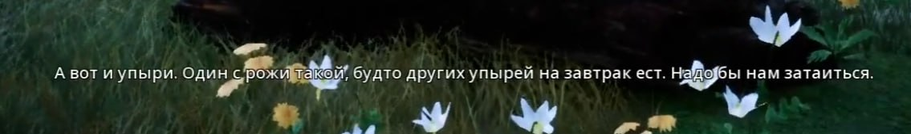
Росіяни не бачать свого існування без того, щоб не висказати до чогось свою зневагу»
2) Приклад з офіційної російської локалізації Death and Taxes (якість погана, бо скріни від самого перекладача з тексту, як вже зробили).
Англійська версія - чистий текст, жодних натяків на якісь акценти та висміювання
Російська — вирішила втулити стьоб над вимовою іншого народу в складі їх же країни, просто «тому що»:
Знову якась їх локальна маячня з приколами над вимовою:
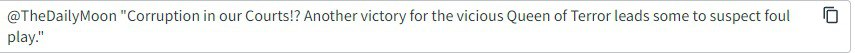
Ось доволі важливий політичний момент. В оригіналі не було ніякого оціночного судження про потреби ходити на протест. Але русня своє вліпила, бо холопи мають сидіти, терпіти та ні за що не боротись і не дай бог нічого не висловлювати:
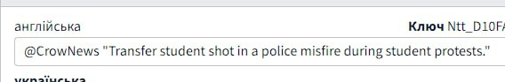
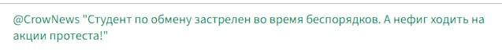
Особливо це гидко на фоні того, що українська «Революція гідності», по суті, почалась саме з того, що через проросійського Януковича студенти, які й вийшли в знак протесту на мирну ходу, були вбиті.
І ось знову елементи російської культури:
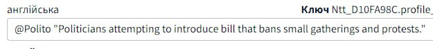
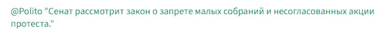
В оригіналі абсолютно нічого про «несанцкіцоновані» мітинги. Навпаки, це реально існуючий термін в російському законодавстві:
Кодекс Российской Федерации об административных правонарушениях от 30 декабря 2001 г. N 195-ФЗ
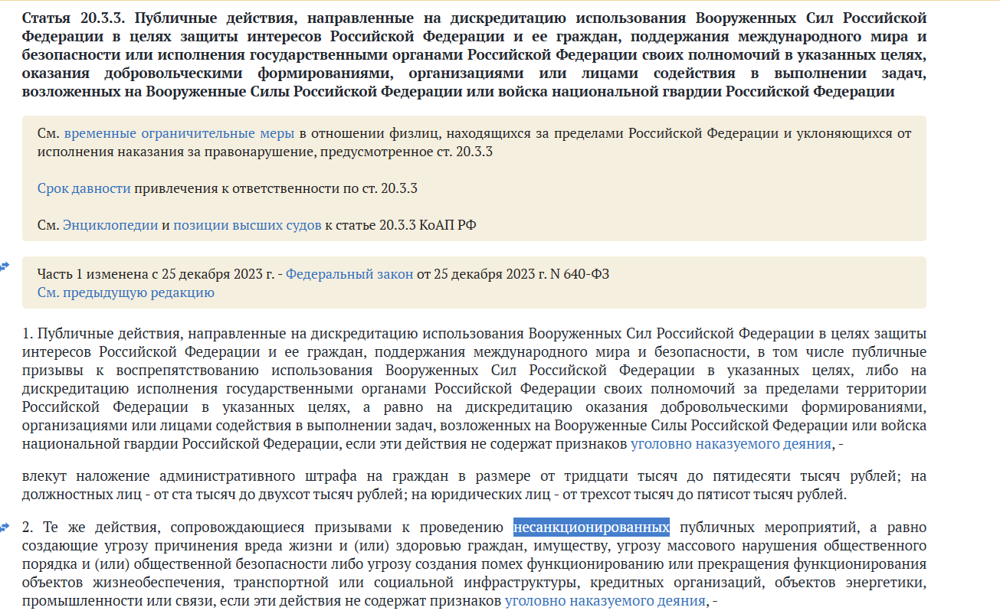
3) Офіційна локалізація NFS Underground:
Оригінал: Sup Darlin'? Whoa you ain't Rachel. You must be that hayseed that's bunkin' at her place.
We're sprint racing and if you want in, get out your bankroll.
You do have the same currency in the sticks as we do in the big city, right?
Check the map for the course. You stayin' or goin'?
А маємо якусь вільну адаптацію:
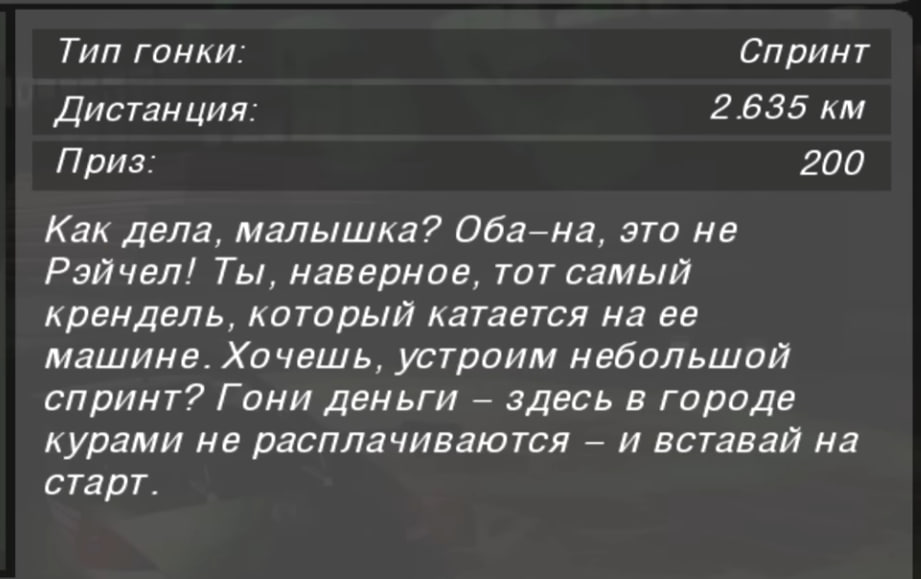
І ось приклад перекладу з російської від InKviZ:
Як справи, мала? Оба-на, це не Рейчел! Ти, напевно, той самий крендель, який катається на її машині. Хочеш, влаштуємо невеличкий спринт? Давай гроші - тут в місті курчатами не розплачуються - і ставай на старт.
Дякую хоч не оце зневажливе «малишка», але всі ці прийдешні з руснявої «крендель», абсолютно непритаманний фразеологізм «курчатами не розплачуються»... Це все досі російська, просто «и» на «і» замінили.
4) А ось ще приклад «перетягування» російської культури в український інформаційний простір.
Той самий перекладач, який не розумів, що не так з перекладами з російської.
Отже, гра Supraland.
Англійська:
Help me light the four candles around the cage - we must overthrow the shallow state!
Російська:
Помоги мне зажечь пламя революции на четырёх свечах в этой пещере - мы должны свергнуть мелочное правительство!
Українська (можете здогадатись):
Допоможи мені запалити полум'я революції на чотирьох свічках в цій печері - ми повинні скинути наш дрібний уряд!
Ну от яке, в сраку, полум'я революції? Звідки воно взялись? Де воно існує, окрім хворої імперської фантазії росіян? І нащо це тягнути до нас?
5) Офіційний переклад Borderlands. В лапках — російська версія, за лапками одразу те що йшло в оригіналі
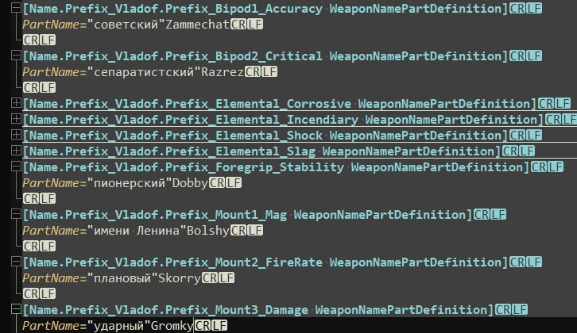
Леніни, піонери, октябрята... які ніякого відношення до гри не мають аж зовсім.
Окремо можна згадати переробку Людміли на Максима:
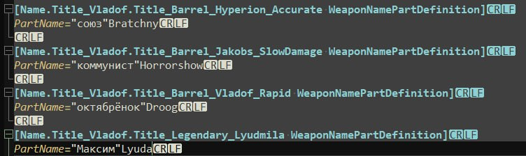
6) Черговий випадок переписування:
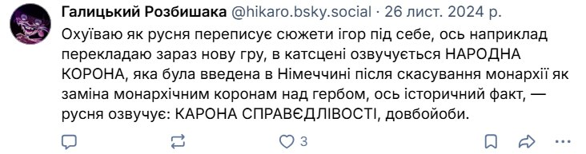
Відступимо поки від ігор та глянемо на фільми та серіали
7) Серіал «Ранкове шоу», русня перекручує сюжет, щоб не виставляти себе для своїх громадян в поганому світлі:
Росіяни тупо взяли і приписали всі свої діяння «азовцям»
Якщо ви на цьому етапі досі не розумієте, чому перекладати з російської - не норм... Лікуйтесь.